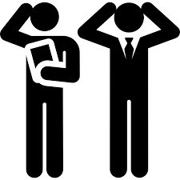

Need Finding and Paper Prototyping
July 12, 2019

Need finding is important in developing an application. It sums up the problems that we want to solve. Actually, for me, this is one of the most difficult part when developing an application because how would you know if the application that you are developing really solves a specific problem. Miss Jen told us that Google Glass failed because it cost a thousand dollar, but it does not really solve a specific problem, it was just like the other regular glasses but with cool specifications.
When we present the need finding or the problem that we want to solve by our project, Miss Jen criticize it to the highest level (huhuhuhu) that we ended up thinking for another project but then our leader decided to stick to our project and know we need to modify or think a very good reason why the problem that we think is really a problem. I know it is hard to think of a problem if only few people realize that it was really a problem that we need to solve.
Paper prototyping is quite hard because we are going to do it as a group but not everyone in the group will participate. But on the other hand, this activity will help us visualize the user interface of our application. This will give us an idea if the application we will be developing is worth the time of the users. Overall, this week is kind a stressful but not with this subject because we do not have an examination. This subject will only require us to think critically and be genuinely happy (I don’t know if I am going to experience this hahaha kidding).
Reflectionns
R1: First Week of USERDES Class
R3: First Web Application using Github and Heroku
R4: Userinyerface - Worst UI Practice
R5: SoCIT Fest
R6: First Half of USERDES